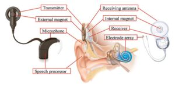
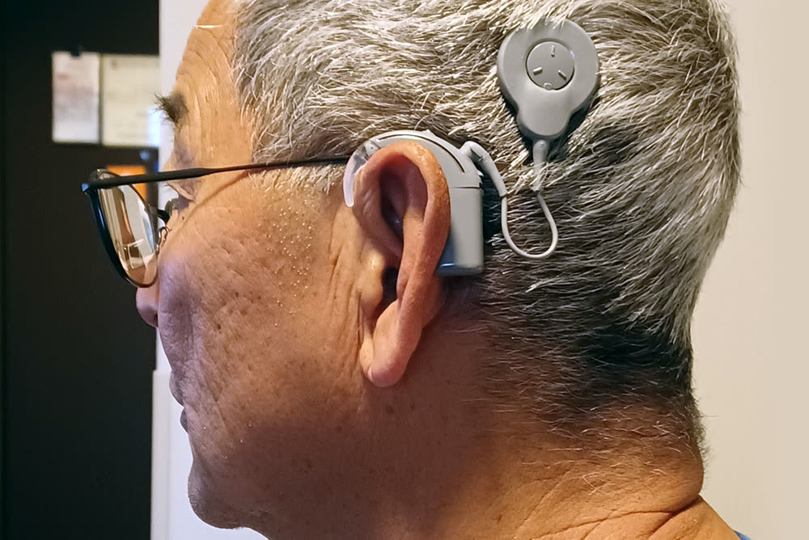

Cochlear Implants
Comprehensive evaluation and candidacy assessments for cochlear implant technology.
What Are Cochlear Implants?
A cochlear implant is a surgically placed electronic device that provides a sense of sound to people with severe to profound hearing loss who receive limited benefit from hearing aids. Unlike hearing aids, which amplify sound, cochlear implants bypass damaged portions of the inner ear and directly stimulate the auditory nerve.
At ACI Hearing Center, we provide comprehensive evaluation and candidacy assessments for cochlear implants for both adults and children, and we will walk you through system options including Cochlear Americas and Advanced Bionics.
How a Cochlear Implant Works
A cochlear implant has both external and internal parts. The external sound processor and transmitter sit behind the ear and on the head. The internal receiver and electrode array are placed during surgery and stimulate the auditory nerve directly — bypassing damaged hair cells in the cochlea.

External components (left) work with internal components (right) to deliver sound directly to the auditory nerve.
Who Is a Candidate?
Cochlear implants may be an option if you or your child meets certain criteria. While a thorough evaluation is needed, general candidacy guidelines include:
Adults
- Moderate to profound sensorineural hearing loss in both ears
- Limited benefit from properly fitted hearing aids
- Score of 50% or less on sentence recognition tests in the ear to be implanted
- No medical conditions that would increase surgical risk
- Motivation and realistic expectations for the process
Children
- Severe to profound sensorineural hearing loss in both ears (12–24 months old)
- Limited benefit from hearing aids over a trial period
- Access to educational programs that emphasize listening and spoken language development
- Family commitment to follow-up appointments and auditory rehabilitation
- Children as young as 12 months may be evaluated
The Evaluation Process
The cochlear implant evaluation at ACI Hearing Center is thorough and designed to determine whether a cochlear implant is the right option for you:
- Comprehensive hearing test — We assess your hearing in both ears to determine the type and severity of your hearing loss.
- Hearing aid evaluation — We verify that your current hearing aids are optimally programmed and assess the benefit they provide.
- Speech perception testing — We measure how well you understand speech with and without your hearing aids.
- Medical evaluation — We coordinate with an ENT (ear, nose, and throat) physician to assess your medical candidacy.
- Counseling — We discuss what to expect, the timeline for activation, and the rehabilitation process.
- Referral and coordination — If you are a candidate, we coordinate with the surgical team and manage your audiological care before and after implantation.
Cochlear Implant Systems We Support
We support multiple cochlear implant systems and will help you understand your options based on candidacy, lifestyle, and communication goals — including Cochlear Americas and Advanced Bionics.

Cochlear Implant Questions Lafayette Patients Ask Most
Honest answers to the questions families across Acadiana ask when they are weighing a cochlear implant. If you do not see your question, call us at 337-223-9448 and an audiologist will walk you through it.
Am I a candidate for a cochlear implant?
You may be a candidate if you have severe to profound sensorineural hearing loss in one or both ears and are getting limited benefit from hearing aids. The clearest sign is when even your best-fitted hearing aids no longer let you understand speech well in everyday situations, such as on the phone or in a quiet conversation. The only way to know for sure is a full cochlear implant evaluation, which we provide right here at ACI Hearing Center.
What is the difference between a hearing aid and a cochlear implant?
Hearing aids make sounds louder so the remaining hair cells in your inner ear can detect them. Cochlear implants bypass damaged hair cells entirely and send electrical signals directly to the hearing nerve. For people with severe to profound hearing loss, hearing aids may not provide enough clarity even at maximum volume. A cochlear implant restores access to sound by going around the damaged part of the ear.
Does ACI Hearing Center do cochlear implant evaluations in Lafayette?
Yes. ACI Hearing Center is one of the few audiology clinics in Acadiana that handles the full cochlear implant journey: candidacy evaluation, pre-surgical testing, working with the surgical team, activation, programming (called mapping), and long-term follow-up care. You do not need to travel to New Orleans or Houston for cochlear implant audiology services. We see implant patients from across Lafayette, Broussard, Youngsville, Carencro, and the surrounding parishes.
Will insurance or Medicare cover a cochlear implant?
Yes, in most cases. Medicare, Medicaid, and most commercial insurance plans (BCBS Louisiana, UnitedHealthcare, Aetna, Cigna, Humana) cover cochlear implants when medical necessity criteria are met. Coverage usually includes the device, the surgery, activation, and a set number of programming visits. We help you handle pre-authorization and walk you through any out-of-pocket portion in writing before any decision is made.
How long does it take to learn to hear with a cochlear implant?
Most adult patients begin to recognize voices and environmental sounds within the first few weeks after activation. Clearer speech understanding typically develops over the first six to twelve months as the brain re-learns how to process sound. We see most patients monthly during the first six months, then less often as the device is fine-tuned. Aural rehabilitation exercises speed the process. Children who are implanted young often develop near-typical speech and language with consistent therapy.
Is cochlear implant surgery safe?
Cochlear implant surgery is a well-established procedure performed in the United States since 1984. It is usually done as outpatient surgery taking about two to four hours under general anesthesia. The most common side effects are temporary swelling, taste changes, and dizziness that resolve within weeks. Serious complications are rare. Your ENT surgeon will walk through all risks and benefits during the surgical consultation, and we coordinate care closely with the surgical team.
Which cochlear implant brands does ACI program?
We program and service all three FDA-approved cochlear implant brands: Cochlear (Nucleus), Advanced Bionics, and MED-EL. You and your audiologist choose the brand together based on your hearing needs, lifestyle, sound-processor preferences, and connectivity options like Bluetooth streaming to phones and TV. If you already have an implant from a clinic that has closed, we can take over your programming care.
Can children get cochlear implants?
Yes. The FDA approves cochlear implants for children as young as 9 months old, and earlier in some cases. The earlier a child with severe to profound hearing loss receives an implant, the better the language outcomes tend to be. ACI Hearing Center works with the families of Acadiana children through every step: candidacy testing, coordination with the surgical team in New Orleans or Houston if needed, post-implant mapping, and ongoing follow-up. We also coordinate with school-based speech-language pathologists.